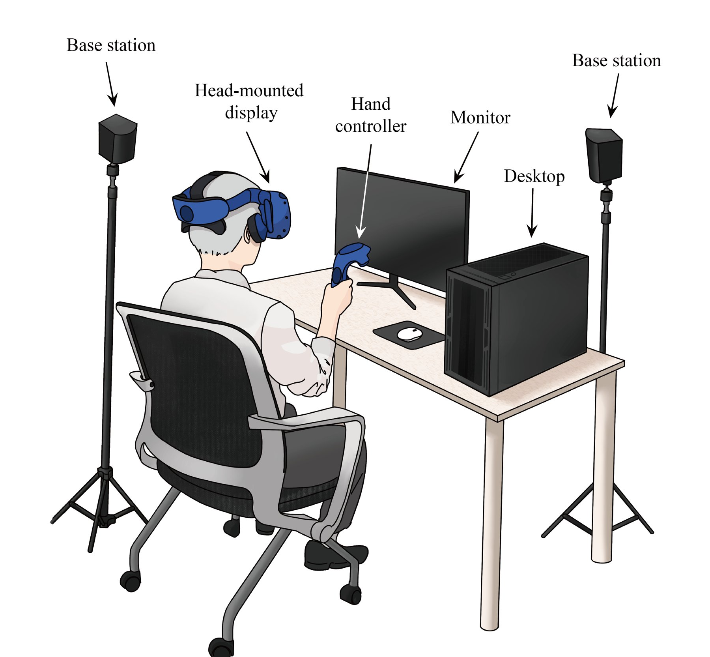
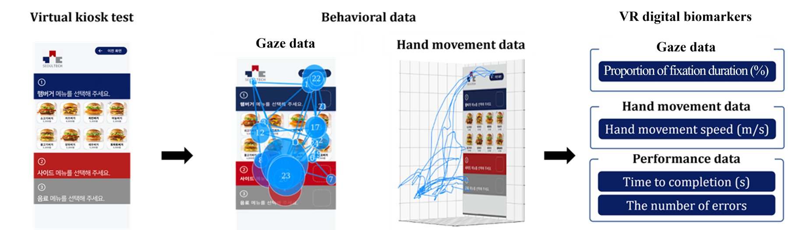

Try it yourself: hear the order once, then place it on a browser version of the kiosk. It records your time and errors.직접 해보세요: 주문을 한 번 듣고, 브라우저용 키오스크에서 주문해 보세요. 완료 시간과 오류 수를 측정해 드려요. Open the demo →데모 열기 →
01Problem문제
MCI is the last window to intervene before dementia, but its early signs are subtle problems in complex daily activities (IADL). Questionnaires need an observer, MRI is costly, and neither records behavior directly. VR can recreate an everyday task and record every movement.
MCI는 치매로 진행되기 전 개입할 수 있는 마지막 단계지만, 초기 징후는 복잡한 일상생활(IADL)에서의 미세한 어려움으로 나타납니다. 설문은 관찰자가 필요하고 MRI는 비싸며, 둘 다 행동을 직접 기록하지 못합니다. VR은 일상 과제를 재현하고 모든 움직임을 기록할 수 있습니다.
02Approach접근 방법
- Build the task과제 개발Developed a VR fast-food kiosk in Unity (HTC VIVE Pro Eye): start, dining place, burger, side, drink, payment, PIN — six action steps.Unity로 VR 패스트푸드 키오스크를 개발했습니다 (HTC VIVE Pro Eye). 시작, 식사 장소, 버거, 사이드, 음료, 결제, 비밀번호의 6단계 과제입니다.
- Log everything로그 수집 체계Recorded gaze coordinates every 100 ms and controller positions during the whole task.과제 전체에서 100ms마다 시선 좌표와 컨트롤러 위치를 기록했습니다.
- Fuse gaze with task context시선 + 과제 맥락 융합Aligned raw gaze with each step's context (button positions, correct button) to compute the proportion of fixation duration on the right target.원시 시선 좌표를 단계별 맥락(버튼 위치, 정답 버튼)과 시간 정렬해, 정답 대상을 주시한 비율을 계산했습니다.
- Model and validate모델링·임상 검증Four features — hand speed, fixation proportion, time to completion, errors — fed an SVM, validated with neurologists at Hanyang University Hospital.손 속도, 주시 지속 비율, 완료 시간, 오류 수의 4개 feature로 SVM을 학습하고, 한양대학교병원 신경과와 임상 검증했습니다.



03Results결과
- All four features differed significantly between groups: people with MCI moved their hands more slowly, spent less time looking at the correct target, took longer and made more errors.4개 feature 모두 집단 간 유의한 차이가 있었습니다. MCI군은 손이 더 느리고, 정답을 주시한 비율이 낮고, 더 오래 걸리고, 오류가 많았습니다.
- SVM: accuracy 93.3%, sensitivity 100%, specificity 83.3%, F1 94.7%.SVM: 정확도 93.3%, 민감도 100%, 특이도 83.3%, F1 94.7%.
- A registered patent on eye-tracking data calibration came out of the data pipeline.데이터 파이프라인에서 시선 추적 데이터 보정 방법 특허가 등록되었습니다.
04My role나의 역할
- Built the VR task in Unity and designed the gaze/hand logging system.Unity로 VR 과제를 직접 개발하고 시선·손 로그 수집 체계를 설계했습니다.
- Designed the features, ran the analysis and models, and worked with neurologists on clinical validation.feature를 설계하고 분석·모델링을 수행했으며, 신경과 의료진과 임상 검증을 진행했습니다.
05Outputs성과물
- Paper논문Digital marker for early screening of MCI via hand and eye movement in VR (JMIR 2023)VR 손·눈 움직임 기반 MCI 조기선별 디지털 마커 (JMIR 2023) →
- Paper논문Technostress causes cognitive overload in high-stress people (IP&M 2022)기술 스트레스가 고스트레스군의 인지 과부하를 유발 (IP&M 2022) →
- Paper논문Integrating biomarkers from VR and MRI (JMIR 2024)VR과 MRI 바이오마커 통합 (JMIR 2024) →
- Patent특허Eye-tracking data calibration method and system (KR10-3010544, registered 2026.08.24)시선 추적 데이터 보정 방법 및 시스템 (KR10-3010544, 2026.08.24 등록)
06Tools & methods사용 기술
UnityC#HTC VIVE Pro EyeEye trackingPythonscikit-learn (SVM)